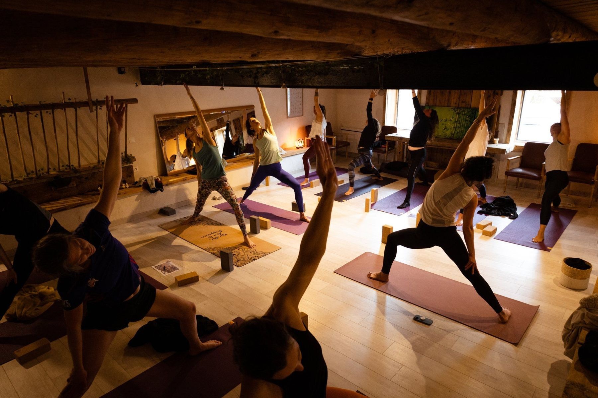

La salle de yoga & activités
60 m² privatisés dans l’ancienne étable, le charme des vieilles pierres et le confort en plus. Jusqu’à 15 stagiaires, matériel de yoga fourni pour 10 personnes.
de 50 € à 150 € / jour
Organiser un séjour